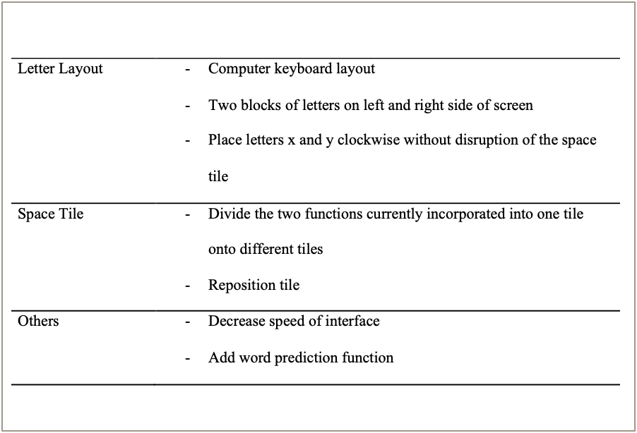

Eye Tracking Study
Improving a gaze speller by implementing multimodal feedback
Goal
Explore the impact of adding feedback on user performance (typing speed & error rate) and experience to a gaze speller
Hypotheses
- H1: Providing any type of feedback, either visual or auditive, to the system will lead to a more efficient system than providing no feedback to the users.
- H2: Providing a combination of audio-visual feedback will lead to the most efficient system in comparison to the other systems.
- H3: Providing any type of feedback, either visual or auditive, to the system will be rated more positively by the users than providing no feedback to the users.
- H4: Providing a combination of audio-visual feedback will be the most preferred interface by the users in comparison to the other systems.
Eye typing systems are often used for paralysed people
The previous interface (left) and the revised interface tested in the study (right)
Role / Responsibility
Main Researcher / Project Lead (Master Thesis Project)
Collaborators
TU Berlin - Chair of Human Machine Systems
Time Span
12/19 - 02/21 (Covid Interruptions)
Approach
- Literature review based on previous research
- Creation of hypothesis based on literature review
- Design of experiment
- Planning (Covid Regulations)
- Development of Interface
- Recruitment
- Experiment Conduction - Laboratory Study with 32 participants
- Quantitative & qualitative results analysis (29 data sets)
- Writing of thesis & publication of paper in International Journal of Human-Computer Interaction
An overview of the experimental design
Measures
Quantitative
Typing Speed, Error Metrics, Ranking of feedback conditions
Qualitative
Immediate rating of feedback condition, Most / Least preferred feedback types, Suggestions for improvement, Experience of interaction & interface, Demograohic data
Run time per feedback condition
Words per minute & Run time per feedback condition
Results
- Performance measures were best for audio-visual feedback, but only statistically significant in comparison to having no feedback
- Implementing any type of feedback led to better performance measures tha having no feedback at all, however not always significantly
- All conditions containing any type of feedback were rated more positively than the no feedback condition
- Visual feedback was the most preferred feedback

Ideas for improvement mentioned by the participants
Further Notes
- Limitations of the study were collected and passed on for future researchers
- Ideas for future research and improvements of the system were highlighted and collected
- Further statistical analysis were conducted than the ones presented here
- Based on this project, a scientific project was written and published (07/22)